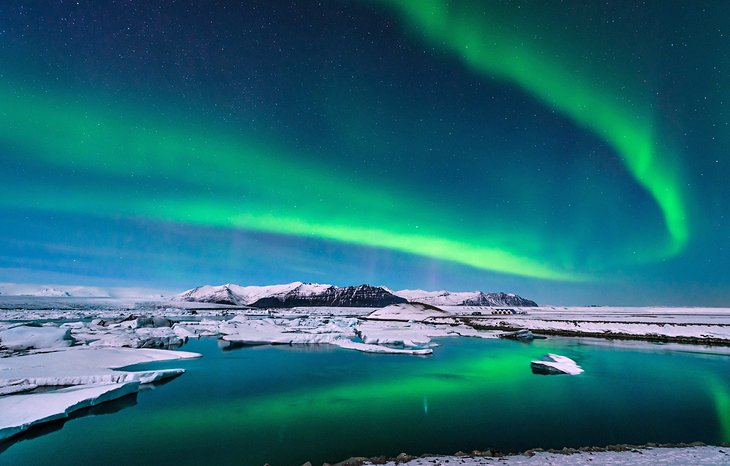

Whale Watching,reykjavik
No matter when you plan to travel, whale watching
happens year-round, although summer is the most popular
time to see these gentle giants. During the warmer months,
trips run day and night, including whale watching in the midnight sun.
Tour operators say there's an 80-95 percent chance of seeing these
magnificent creatures, depending on the time of year.
Best of all, surfacing often happens right near the boats, so you
may as well enjoy a ringside seat for one of nature's most
awe-inspiring spectacles.
Blue Lagoon,Grindavic
Blue Lagoon, Grindavic
Just 40 minutes' drive from Reykjavík, this most iconic
of geothermal spas is a must-see tourist attraction.
Here, you'll find natural bathing in pale blue water in
the shadow of a power station.
An entire Blue Lagoon industry has grown around this attraction
since it first became a hit with locals in 1976.
The water from the underground hot springs reaches 37-39 degrees
Celsius and is said to be highly beneficial for both health and skin.
Skaftafell Ice Cave
Skaftafell Ice Cave, Vatnajökull National Park
In the south of the country, Vatnajökull National Park is a
land of glaciers and magnificent ice caves, which attract
adventurers from across the globe.
The vast national park (one of three in Iceland) is divided
into four sections and consists of Vatnajökull glacier and
its surroundings.
You'll find a number of visitor centers; those in Skaftafell Ice Cave
and Höfn are open year-round, while Skriðuklaustur and Jökulsárgljúfur
are closed in winter.

Aurora Borealis
Aurora Borealis,
The northern Lights, or Aurora Borealis, are among the most popular
tourist attractions in Iceland.
Auroras are linked to solar wind, a flow of ions radiating from the sun.
These particles become ensnared in the earth's magnetic field and
collide with atmospheric molecules, causing bursts of energy, which
appear as large circles around the poles.
This spectacular natural light show is best admired in remote places
and is particularly impressive at times of increased solar activity.